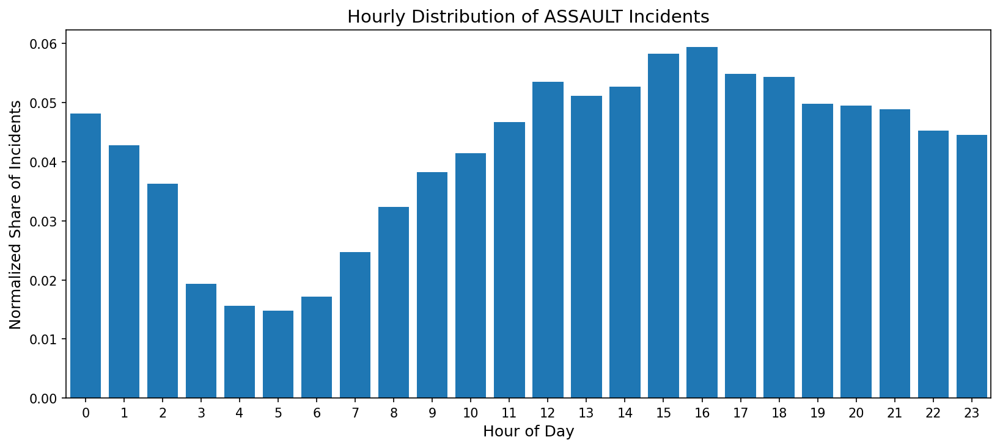

Introduction
Assault is not distributed evenly across the city or the day. Looking only at totals hides
important variation in both time and geography. The three figures below build the story in stages:
first the daily rhythm, then the district-level hourly map, and finally a comparison between assault
and other crime categories.
1. Assault has a clear daily rhythm
A first look at assault incidents shows that the pattern is far from uniform across the day.
This gives the reader an immediate overview before adding spatial detail.
Figure 1. Hourly distribution of assault incidents

Caption: Assault incidents are relatively uncommon in the early morning hours
and rise later in the day, remaining elevated into the evening. This shows that time of day is
an important part of the assault pattern.
2. The district pattern changes over the day
The next figure adds geography. Instead of only asking when assault happens, it asks where
assaults are concentrated at different times of day.
Figure 2. Assault counts across police districts by hour
Caption: This animated district choropleth shows how assault counts vary across
San Francisco police districts throughout the day. Keeping the color scale fixed makes it easier
to compare the hourly district pattern.
3. Assault can be compared with other crimes
The final figure lets the reader compare assault with a selected crime category using the same
district-level map structure. This makes it possible to see whether other crimes share a similar
spatial pattern or cluster differently across the city.
Figure 3. Assault versus a selected crime category across districts
Caption: The left side keeps assault fixed, while the right side updates to a
selected crime category. This comparison helps reveal whether other crimes align with assault
spatially or follow a different district profile.
Conclusion
Together, these figures show that assault in San Francisco has both a temporal pattern and a spatial
structure. It peaks at particular times, concentrates differently across districts over the day,
and does not necessarily match the geography of other crimes.